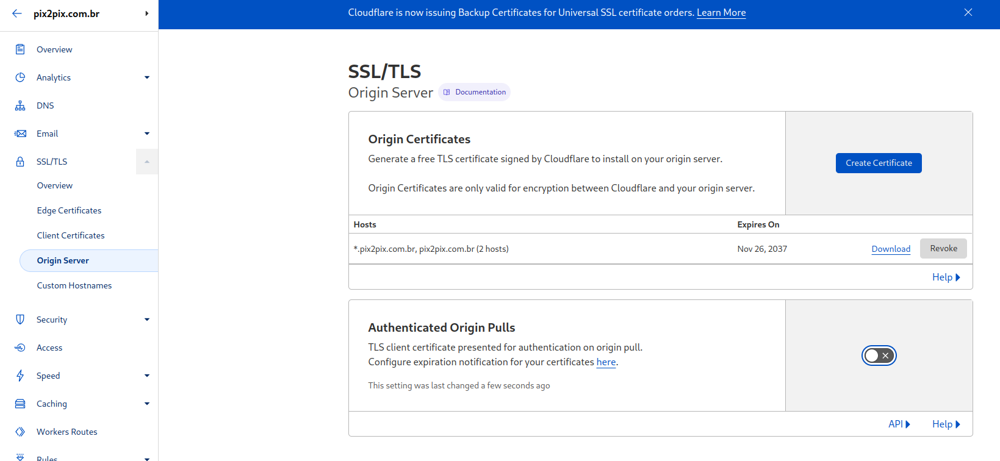

Just to clarify the objective of this paper, Cloudflare stated to me this does "not appear to be any security implications as a direct result of this behavior". This paper is to help Cloudflare WAF clients understand the criticality of NEVER disclosing the Origin IP address in any way, through stacktrace, DNS history, DNS enumeration, subdomain enumeration, or even social engineering.
Origin IP address
The attacker can completely bypass: Cloudflare WAF, managed rules, IP access rules, page rules, cache. All this without being logged on the target WAF in any way. The attacker is also able to execute HTTP DOS, ignore WAF restrictions, and test/exploit vulnerabilities that would otherwise be blocked by managed rules.
First, let's enumerate all the enabled or not security layers on the attacked application:
UFW with default incoming block has these exceptions:

Authenticated origin pull not configured, Cloudflare edge certificate being used:
Only one Cloudflare DNS entry, proxying traffic to the attacked application. (Also note this account email is "@hotmail.com")

SSL/TLS on Full (strict) since it's using an Edge certificate
Initially deactivated Authenticated Origin Pulls
No enabled WAF rules

And here is the webpage:
Let's set up a WAF rule to bypass as an example:
The rule:

Turning it on:

Testing the rule:

On this step, I will show how to bypass the Firewall IPTables rules (UFW).
As stated before, as a requirement for this bypass you need to know/discover the Origin IP for the target in one of the many possible ways. This screenshot shows a DNS entry on another domain, another account (@gmail.com) to the same Origin IP:

SSL/TLS needs to be set up to "Full" since the Edge certificate is from another account:

For now, the Authenticated Origin Pull will be off:

No WAF rules:

No HTTP DOS protection:

Since we will be talking to the IP through Cloudflare, the IP IS IN THE UFW LIST already. Since this attacked account has no security layers from Cloudflare enabled, we are able to bypass the "block all" Cloudflare WAF rule as well as any of the already stated Cloudflare features (Cloudflare WAF, managed rules, IP access rules, page rules, cache). We won't be logged in the WAF because the logs will be on the attacker's own account.
One of the security layers recommended by Cloudflare to protect the Origin server are the "Authenticated Origin pulls", so let's activate it.
Setting up Apache:
Enabling on Cloudflare:

Temporarily disabling the WAF rule for testing:
WebPage successfully loaded:

Enabling the rule:

Being blocked by the rule:
Lets open the attacker URL again and see what happens:

The problem is that non-enterprise accounts, and even probably most enterprise accounts that use authenticated origin pull, use Cloudflare's recommended certificate. So, enabling Authenticated Pull on the attacker account is also:

Accessing the attacker website bypassing both authenticated origin pull and the WAF rule:

Since the certificate is the same for almost all Authenticated Origin Pull, enabling Authenticated origin pull on the attacker account is enough.
If you use Cloudflare WAF and can't periodically rotate IP or you're unsure if the IP will leak by the application or subdomains, use a custom authenticated pull certificate or use a Cloudflare tunnel. Otherwise, you risk an attacker being able to completely ignore any security layers on a Cloudflare application, from WAF vulnerability mitigations to HTTP DOS.